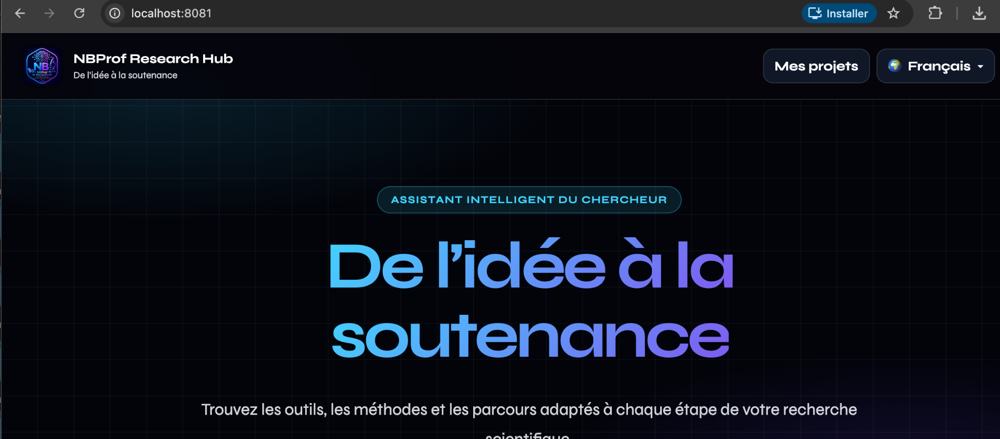
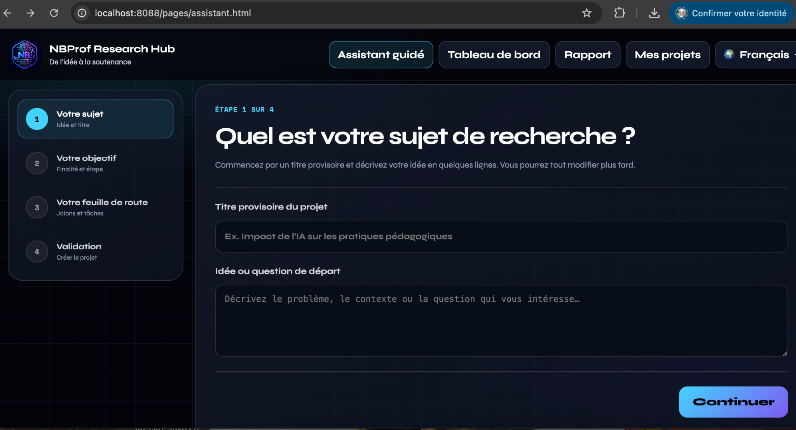
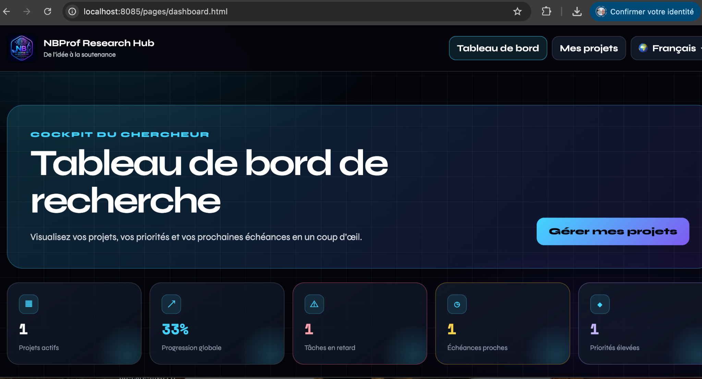
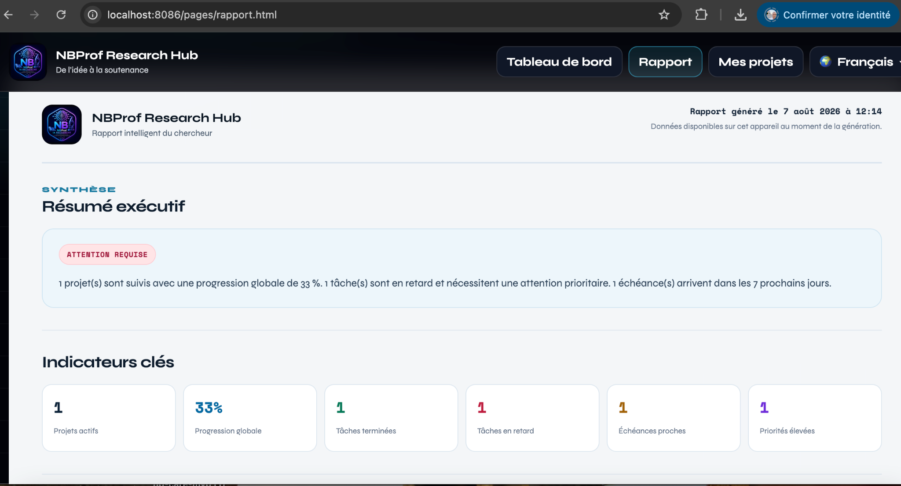

Clarifier
Transformer une idée en objectif, étape actuelle et feuille de route.
NBProf Research Hub centralise les étapes essentielles d’un projet scientifique : cadrage, planification, suivi, priorités, rapport et progression.

Entre lectures, échéances, idées, tâches et livrables, un projet de recherche peut vite se fragmenter. NBProf Research Hub rassemble ces éléments dans un espace cohérent et lisible.
Transformer une idée en objectif, étape actuelle et feuille de route.
Organiser jalons, tâches, priorités et échéances sans perdre la vision globale.
Visualiser la progression et repérer immédiatement les points d’attention.
Produire un rapport lisible et exportable pour garder une trace de l’avancement.
Chaque module répond à un besoin précis tout en partageant les mêmes données locales du projet.
Définissez votre sujet, objectif, livrable et rythme. L’assistant propose ensuite des jalons, tâches, priorités et échéances modifiables.
Découvrir →
Progression, retards, échéances proches, priorités, filtres et recherche dans une vue synthétique.

Un résumé exécutif, des indicateurs clés et un export PDF A4 prêt à partager ou archiver.

NBProf Research Hub peut soutenir l’organisation personnelle d’un mémoire, d’une thèse, d’un article ou d’un autre projet scientifique, sans remplacer l’encadrement académique ni le jugement du chercheur.
Les projets, notes et suivis sont enregistrés localement sur l’appareil. L’utilisateur garde la responsabilité de ses sauvegardes et peut exporter ses projets en JSON.
Découvrez la première version majeure de NBProf Research Hub et construisez votre feuille de route.